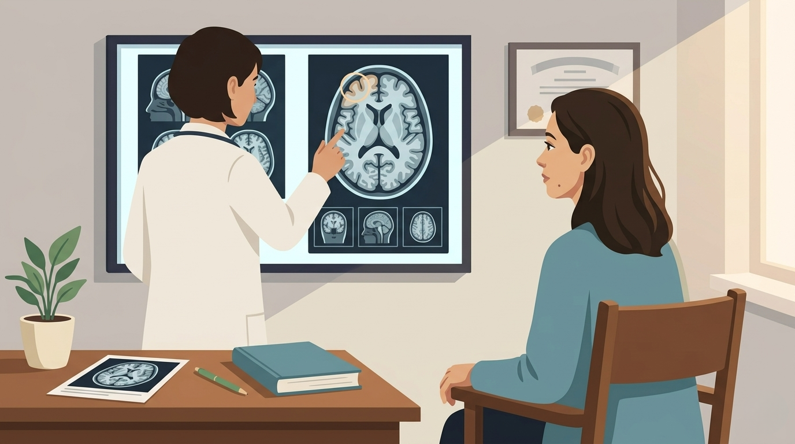

By Rustam Iuldashov
30 years lived experience with chronic migraine | Sources: 28 peer-reviewed references including Nature, The Lancet Neurology, Nature Neuroscience, Cephalalgia, European Journal of Neurology, The Journal of Headache and Pain, Biochemical Journal | Last updated: May 23, 2026
Medical Review: This content is based on peer-reviewed research from Nature, The Lancet Neurology, Nature Neuroscience, Nature Reviews Neurology, Cephalalgia, European Journal of Neurology, The Journal of Headache and Pain, Biochemical Journal, BMC Neurology, Cardiovascular Diabetology, Journal of Medical Virology, Frontiers in Neurology, and others.
Important Notice: This article is for informational purposes only and does not replace professional medical advice. The author is not a licensed physician or healthcare professional. Always consult your doctor before making any changes to your treatment plan.
Key Takeaways
- About 25% of COVID-19 cases involve acute headache, and 16% of those still have it at 9 months — most with a migraine-like phenotype.[2][3]
- More than half of patients with pre-existing migraine report worsening after COVID, with measurably more headache days per month.[5][6]
- Three biological mechanisms now have substantial evidence: trigeminovascular neuroinflammation (NLRP3, IL-6, elevated CGRP), vagus nerve damage causing dysautonomia, and amyloid microclots blocking brain capillaries.[12][13][15][19]
- Brain MRI changes are visible even in mild, non-hospitalized cases — this is not “just stress.”[14]
- Standard migraine medications often work less well after COVID, but CGRP monoclonal antibodies and indomethacin show promising response data.[24][26]
- For most patients, post-COVID migraine improves over one to two years; it is not necessarily a life sentence.[4]
The Wave Nobody Named
Something strange showed up in headache clinics in the spring of 2020. Patients with decades of stable migraine were reporting attacks twice as often. People who had never had a headache in their lives were calling for appointments, describing throbbing, photophobic pain that looked exactly like migraine. Affected regions saw a five-fold jump in headache incidence.[1] Clinicians blamed lockdown stress at first. Disrupted sleep. Screen time. But the pattern kept going long after lockdowns ended. Something biological was happening — and we finally know what.
Three mechanisms explain it. Inflammation in the trigeminovascular system. Damage to the vagus nerve. Microscopic clots blocking brain capillaries. The data behind each is now substantial.
The Scale of the Wave
Start with the numbers. Headache hits roughly one in four people who get COVID. A meta-analysis pooling 104,751 confirmed cases across 78 studies put cumulative prevalence at 25.2% — roughly twice what other respiratory viruses produce.[2]
The headaches don’t always go away. A Spanish prospective cohort followed 905 patients for 9 months; 16% still had it, most with a migraine-like phenotype.[3] A 24-month Brazilian follow-up of 732 patients found de novo headaches lasting up to two years.[4]
Patients with pre-existing migraine fared worse. In a Kuwaiti study of 121 confirmed cases, average headache days climbed from 8.66 to 11.09 per month after infection — significant at P < .006.[5] An Italian questionnaire of 102 confirmed cases found 52.94% reporting worsening, every single one with increased attack frequency.[6] A New York case series of seven patients: six needed to change their preventive regimen. Botox and anti-CGRP antibodies — the standard heavy artillery — worked less well than before.[7]
The global picture is sobering. By the end of 2021, the Institute for Health Metrics and Evaluation estimated 144.7 million people had developed long COVID, 22 million of them still symptomatic at 12 months.[8] A 2025 meta-analysis of 429 studies put pooled global prevalence at 36%.[8] Headache is one of the most common neurological features of it.
This is the wave. Now the mechanism.

Mechanism #1: Neuroinflammation of the Trigeminovascular System
Migraine is, at its core, neurogenic inflammation in the trigeminovascular system — the trigeminal nerve and the blood vessels around the brain. SARS-CoV-2 attacks exactly this circuit.
Entry is through the nose. The virus crosses the olfactory mucosa and rides the trigeminal pathway into the brain — which is why losing your sense of smell is so distinctive.[9] Once inside, it infects microglia, the brain’s resident immune cells, and switches them into pro-inflammatory mode. They start pumping out interleukin-1β, interleukin-6, and tumor necrosis factor-alpha.[10] Post-mortem brains from COVID patients show the result: microgliosis, microglial nodules, immune cells infiltrating the medulla oblongata and brainstem.[11]
What does this do to the headache circuit? In Turkey, a study of 88 hospitalized patients found that those with headache had significantly elevated serum levels of HMGB1, the NLRP3 inflammasome, IL-6, and ACE2 compared to patients without headache. NLRP3 levels correlated with both headache duration and hospital stay length.[12] The same NLRP3 inflammasome is implicated in pre-pandemic experimental models of migraine.[12]
The smoking gun came from Spain. Serum alpha-CGRP — calcitonin gene-related peptide, the central molecule in migraine — was elevated to 55.2 pg/mL in COVID patients with headache versus 33.9 pg/mL in healthy controls (p < 0.01).[13]
CGRP is what every modern anti-migraine antibody targets. Finding it elevated in COVID headache is direct evidence of trigeminovascular activation.
And the brain itself physically changes. A UK Biobank study scanned 785 people before and after infection. Compared to controls, those who had COVID showed greater reductions in grey matter thickness in the orbitofrontal cortex and parahippocampal gyrus, with markers of tissue damage in regions connected to the olfactory cortex — even in mild, non-hospitalized cases.[14]
Mechanism #2: Vagus Nerve Damage and Dysautonomia
The second mechanism is quieter. The vagus nerve runs from the brainstem to nearly every organ in the body. It controls heart rate, digestion, breathing — and crucially, it runs the anti-inflammatory reflex that keeps neuroinflammation from running wild.
SARS-CoV-2 has the keys to this nerve. The receptors it uses to enter cells — ACE2, neuropilin-1, TMPRSS2 — are all expressed on vagal tissue.[15] A 2023 histopathology study confirmed what this means in practice: vagal nuclei in the brainstems of COVID patients showed elevated HLA-DR+ monocytes and CD8+ T cells. Active inflammation, in the command center of the autonomic nervous system.[15]
The clinical consequence is dysautonomia — most commonly POTS, postural orthostatic tachycardia syndrome. Autonomic dysfunction affects an estimated 30–50% of long COVID patients with neurological complications.[16] POTS and migraine overlap heavily: pre-existing migraine raises the risk of post-COVID POTS, and POTS patients have very high headache rates.[17]
Why does this matter? Because the vagus is the body’s brake on inflammation. When it fails, low-grade neuroinflammation simmers indefinitely, lowering the threshold for an attack.
Patients describe the experience precisely — small stressors that used to be nothing now reliably set off migraines.
Mechanism #3: Amyloid Microclots in Brain Capillaries
The third mechanism is the most contested — and the most visually striking. In 2020, Resia Pretorius and Douglas Kell at Stellenbosch University began staining blood samples from COVID patients with fluorescent dyes that bind to amyloid proteins. The whole field of view lit up. They were looking at dense, abnormal fibrin clots — smaller than red blood cells, resistant to the body’s normal clot-dissolving machinery.
The 2021 Cardiovascular Diabetology paper that emerged documented these clots in 80 long COVID patients, alongside elevated antiplasmin — explaining why the clots refuse to break down.[18] Their 2022 review in Biochemical Journal proposed amyloid fibrin microclots as a central mechanism of PASC pathophysiology.[19] The spike protein alone, in vitro, can trigger amyloid microclot formation in healthy plasma — no live virus needed.[20] A 2025 study in the Journal of Medical Virology confirmed elevated microclot counts in long COVID patients and showed they cluster with neutrophil extracellular traps — webs of immune debris that further clog small vessels.[21]
For migraine, the implication is mechanical. Microclots can block brain capillaries, causing patches of micro-ischemia. The picture is biologically similar to what happens during cortical spreading depression — the wave of electrical and metabolic disruption thought to underlie migraine aura.[22] Add this to an already inflamed trigeminovascular system, and the brain has both the structural and chemical setup for repeated attacks.
The microclot hypothesis is well-replicated but still debated; clinical implications need larger trials before firm conclusions.[23] Best understood as one of three converging mechanisms — not a single cause.
⚠️ When to Seek Urgent Medical Care
Post-COVID headache is usually a chronic but non-emergency condition. However, a new or rapidly worsening headache can occasionally signal something more serious — particularly in the weeks following a COVID infection, when stroke and venous sinus thrombosis risks are elevated. Seek emergency care immediately if you experience:
- The worst headache of your life, sudden in onset (“thunderclap”)
- Headache with fever, neck stiffness, or confusion
- New neurological symptoms: weakness on one side, slurred speech, vision loss, seizure
- Headache that worsens with lying down or wakes you from sleep
- Sudden cognitive change or loss of consciousness
Don’t self-manage these symptoms. Call emergency services or go to the nearest emergency room.
What Treatments Are Showing
The first wave of clinical data is mixed — and hopeful. Standard migraine treatments often work less well after COVID; many patients in the New York case series needed to switch regimens.[7] But targeted therapies are showing signal. A Korean case series of nine patients with persistent post-COVID headache treated with CGRP monoclonal antibodies saw monthly headache days fall from 25 to 5, and severity scores drop from 8 to 3.[24] A Turkish case of a 44-year-old woman with severe post-COVID headache showed near-complete cessation within two days of galcanezumab.[25] Indomethacin, an NSAID with unusual anti-neuroinflammatory effects, gave more than 50% relief to 36 of 37 patients in a Brazilian study.[26]
The long view from Spain’s 24-month follow-up is cautiously good: most patients improve over one to two years. The post-COVID migraine wave is not, for most people, a life sentence.[4] For those still in the middle of it, the science finally points to specific interventions — anti-inflammatory protocols, CGRP-targeted prevention, vagal tone restoration through pacing and gradual reconditioning. Treatment that matches the biology, not just dulls the pain.
⚕️ Important Medical Disclaimer
This article is for informational and educational purposes only and does not constitute medical advice, diagnosis, or treatment. The author, Rustam Iuldashov, is not a licensed physician, neurologist, or healthcare professional. He is a patient advocate with 30 years of personal experience living with chronic migraine.
All clinical claims in this article are sourced from peer-reviewed research published in indexed medical journals. Study designs and sample sizes are noted where applicable.
Always consult a qualified healthcare provider for questions about your individual health, migraine treatment, or medication decisions. Never start, stop, or switch preventive migraine medications without discussing it with your doctor first.
This article discusses post-COVID neurological conditions, where some mechanisms — particularly the amyloid microclot hypothesis — remain under active scientific debate. Specific medications mentioned (CGRP monoclonal antibodies, indomethacin) require prescription and clinical supervision; never self-medicate based on this article. If you experience sudden severe headache, neurological symptoms, or thunderclap-onset pain, seek emergency care immediately — post-COVID windows have elevated risk of stroke and cerebral venous sinus thrombosis. This content was last reviewed for accuracy on May 23, 2026.
References
- Membrilla JA, et al. “Coronavirus disease-19 and headache; impact on pre-existing and characteristics of de novo: a cross-sectional study.” The Journal of Headache and Pain, 22(1):51 (2021). doi:10.1186/s10194-021-01268-w. Study design: Cross-sectional. n=121.
- Islam MA, et al. “Global prevalence and pathogenesis of headache in COVID-19: A systematic review and meta-analysis.” Frontiers in Neurology, 12:649907 (2021). doi:10.3389/fneur.2021.649907. Study design: Systematic review and meta-analysis. n=104,751 (78 studies).
- Garcia-Azorin D, Layos-Romero A, Porta-Etessam J, et al. “Post-COVID-19 persistent headache: A multicentric 9-months follow-up study of 905 patients.” Cephalalgia, 42(8):804–809 (2022). doi:10.1177/03331024211068074. Study design: Prospective multicentric cohort. n=905.
- Silva DP, et al. “Long-Term Persistent Headache After SARS-CoV-2 Infection: A Follow-Up Population-Based Study.” European Journal of Neurology, 32(5):e70130 (2025). doi:10.1111/ene.70130. Study design: Prospective cohort, 24-month follow-up. n=732.
- Al-Hashel JY, Abokalawa F, Toema D, et al. “Coronavirus disease-19 and headache; impact on pre-existing and characteristics of de novo: a cross-sectional study.” The Journal of Headache and Pain, 22:97 (2021). doi:10.1186/s10194-021-01314-7. Study design: Cross-sectional. n=121.
- Granato A, et al. “The Impact of COVID-19 on Migraine: The Patients’ Perspective.” Life (Basel), 14(11):1420 (2024). doi:10.3390/life14111420. Study design: Cross-sectional questionnaire. n=102.
- Leder AN, et al. “Changes in Migraine Headaches Following SARS-CoV-2 Infection: A Case Series.” Cureus, 17(4):e80123 (2025). doi:10.7759/cureus.80123. Study design: Case series. n=7.
- Hou Y, Gu T, Ni Z, et al. “Global Prevalence of Long COVID, its Subtypes and Risk factors: An Updated Systematic Review and Meta-Analysis.” medRxiv preprint (2025). doi:10.1101/2025.01.01.24319384. Study design: Systematic review and meta-analysis. n=429 studies.
- Meinhardt J, Radke J, Dittmayer C, et al. “Olfactory transmucosal SARS-CoV-2 invasion as a port of central nervous system entry in individuals with COVID-19.” Nature Neuroscience, 24:168–175 (2021). doi:10.1038/s41593-020-00758-5. Study design: Post-mortem neuropathology. n=33.
- Jeong GU, Lyu J, Kim K-D, et al. “SARS-CoV-2 Infection of Microglia Elicits Proinflammatory Activation and Apoptotic Cell Death.” Microbiology Spectrum, 10(3):e01091-22 (2022). doi:10.1128/spectrum.01091-22. Study design: In vitro experimental.
- Matschke J, Lütgehetmann M, Hagel C, et al. “Neuropathology of patients with COVID-19 in Germany: a post-mortem case series.” The Lancet Neurology, 19(11):919–929 (2020). doi:10.1016/S1474-4422(20)30308-2. Study design: Post-mortem case series. n=43.
- Bolay H, Karadas Ö, Oztürk B, et al. “HMGB1, NLRP3, IL-6 and ACE2 levels are elevated in COVID-19 with headache: a window to the infection-related headache mechanism.” The Journal of Headache and Pain, 22(1):94 (2021). doi:10.1186/s10194-021-01306-7. Study design: Cross-sectional with controls. n=88.
- Ochoa-Callejero L, García-Sanmartín J, Villoslada-Blanco P, et al. “Serum alpha-CGRP levels are increased in COVID-19 patients with headache indicating an activation of the trigeminal system.” BMC Neurology, 23:88 (2023). doi:10.1186/s12883-023-03156-z. Study design: Case-control. n=65.
- Douaud G, Lee S, Alfaro-Almagro F, et al. “SARS-CoV-2 is associated with changes in brain structure in UK Biobank.” Nature, 604:697–707 (2022). doi:10.1038/s41586-022-04569-5. Study design: Prospective longitudinal MRI cohort. n=785.
- Woo MS, et al. “Vagus nerve inflammation contributes to dysautonomia in COVID-19.” medRxiv preprint (2023). doi:10.1101/2023.06.14.23291320. Study design: Post-mortem histopathology + clinical.
- Reiss AB, et al. “Long COVID and the autonomic nervous system: dysautonomia and POTS.” Heart Rhythm O2 (2024). Study design: Narrative review based on multiple cohort studies.
- Goldstein DS. “Post-COVID dysautonomias: what we know and (mainly) what we don’t know.” Nature Reviews Neurology, 20:99–113 (2024). doi:10.1038/s41582-023-00917-9. Study design: Expert review.
- Pretorius E, Vlok M, Venter C, et al. “Persistent clotting protein pathology in long COVID/post-acute sequelae of COVID-19 (PASC) is accompanied by increased levels of antiplasmin.” Cardiovascular Diabetology, 20:172 (2021). doi:10.1186/s12933-021-01359-7. Study design: Case-control imaging. n=80.
- Kell DB, Laubscher GJ, Pretorius E. “A central role for amyloid fibrin microclots in long COVID/PASC: origins and therapeutic implications.” Biochemical Journal, 479(4):537–559 (2022). doi:10.1042/BCJ20220016. Study design: Hypothesis review with supporting evidence.
- Grobbelaar LM, Venter C, Vlok M, et al. “SARS-CoV-2 spike protein S1 induces fibrin(ogen) resistant to fibrinolysis: implications for microclot formation in COVID-19.” Bioscience Reports, 41(8):BSR20210611 (2021). doi:10.1042/BSR20210611. Study design: In vitro biochemistry.
- Thierry AR, Pastor B, et al. “Circulating Microclots Are Structurally Associated With Neutrophil Extracellular Traps and Their Amounts Are Elevated in Long COVID Patients.” Journal of Medical Virology, 97(1):e70613 (2025). doi:10.1002/jmv.70613. Study design: Case-control. n=53.
- Charles A. “The pathophysiology of migraine: implications for clinical management.” The Lancet Neurology, 17(2):174–182 (2018). doi:10.1016/S1474-4422(17)30435-0. Study design: Review.
- Kell DB, Pretorius E. “Fibrinaloid microclots in long COVID: assessing the actual evidence properly.” Research and Practice in Thrombosis and Haemostasis, 8(7):102566 (2024). doi:10.1016/j.rpth.2024.102566. Study design: Critical review.
- Park J, Cho SJ. “Calcitonin Gene-Related Peptide Monoclonal Antibody Treatment in Nine Cases of Persistent Headache Following COVID-19 Infection.” Journal of Korean Medical Science, 40(11):e127 (2025). doi:10.3346/jkms.2025.40.e127. Study design: Retrospective case series. n=9.
- Ozkan E, Celebi O, Keskin-Aktan A, Sindel A. “Is Persistent Post-COVID Headache Associated With Protein-Protein Interactions Between Antibodies Against Viral Spike Protein and CGRP Receptor?: A Case Report.” Frontiers in Pain Research, 3:858709 (2022). doi:10.3389/fpain.2022.858709. Study design: Case report.
- Krymchantowski AV, Silva-Néto RP, Jevoux C, Krymchantowski AG. “Indomethacin for refractory COVID or post-COVID headache: a retrospective study.” Acta Neurologica Belgica, 122:465–469 (2022). doi:10.1007/s13760-021-01790-3. Study design: Retrospective observational. n=37.
- Mitsikostas DD, Caronna E, De Tommaso M, et al. “Headaches and Facial Pain Attributed to SARS-CoV-2 Infection and Vaccination: A Systematic Review.” European Journal of Neurology, 31:e16251 (2024). doi:10.1111/ene.16251. Study design: Systematic review.
- Yang J, Song X, Shi L, et al. “New insights into the increased risk of migraines from COVID-19 infection and vaccination: a Mendelian randomization study.” Frontiers in Neurology, 15:1445649 (2024). doi:10.3389/fneur.2024.1445649. Study design: Mendelian randomization.

How We Create Content
- Peer-reviewed sources only. Nature, The Lancet Neurology, Nature Neuroscience, Nature Reviews Neurology, Cephalalgia, European Journal of Neurology, The Journal of Headache and Pain, Biochemical Journal, BMC Neurology, Cardiovascular Diabetology, Journal of Medical Virology, Frontiers in Neurology, Acta Neurologica Belgica, Microbiology Spectrum, Bioscience Reports, Heart Rhythm O2, Journal of Korean Medical Science, Life, Cureus.
- Study transparency. Study design and sample sizes noted for all clinical references.
- Source verification. All claims backed by numbered references with DOI links.
- Experience + Science. 30 years personal migraine experience combined with peer-reviewed evidence.
- Regular updates. Articles reviewed when significant new research emerges.
- No conflicts of interest. No funding from any pharmaceutical or supplement company referenced in this article.
Track Your Post-COVID Migraine Pattern
Migraine Companion lets you log attack frequency, triggers, and symptoms over months — building the clear before-and-after pattern your neurologist needs to identify post-viral changes and tailor treatment to the biology, not just the pain.
Last reviewed: May 2026
Next scheduled review: November 2026